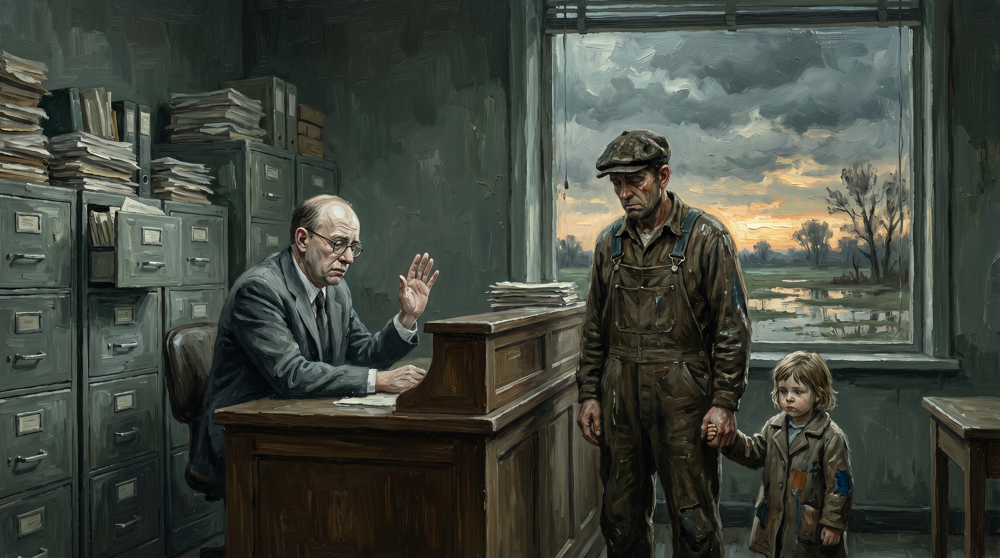

De verzekeraar tegen het leven
Hoe risico-mijding zelf het grootste risico werd
Praktijk · 14 min lezen

Verzekering is een van de mooiste ideeën die mensen ooit hebben bedacht. Je gooit je risico in een pot met anderen. Iedereen draagt een beetje, zodat niemand door één klap wordt vermorzeld. Dat is solidariteit in haar meest concrete vorm — geen sentiment, geen morele lofzang, maar een mechanisme dat werkt. De boer wiens schuur afbrandt, verliest niet alles. De visser wiens boot zinkt, kan weer varen. De familie wier kostwinner sterft, heeft een inkomen.
Die gedachte is zo goed dat ze heeft gewerkt zolang mensen gemeenschappen vormen. Gildes hadden onderlinge steunfondsen. Zeevarende steden hadden scheepsvaartverzekeringen al in de Middeleeuwen. Boerencoöperaties deelden hagelschade. Het idee is universeel en oeroud: samen dragen wat je alleen niet kunt dragen.
Wat die gedachte is geworden, is haar tegenovergestelde. De moderne verzekeraar is een organisatie die elk risico probeert weg te schrijven, weg te contracteren, weg te definiëren — zodat hij zo min mogelijk hoeft uit te keren. En het resultaat is dat steeds meer mensen voor steeds meer dingen onverzekerbaar zijn geworden, terwijl de samenleving als geheel onbeschermd is voor de risico's die er echt toe doen.
De oorspronkelijke gedachte
Wie de geschiedenis van verzekering bestudeert, ziet een model dat werkt op drie principes.
Het eerste is wederkerigheid. Jij draagt bij als een ander het nodig heeft, in de verwachting dat een ander bijdraagt als jij het nodig heeft. Dat is geen transactie — het is een relatie. Je weet niet of je ooit gebruik zult maken van de pot. Maar je weet dat de pot er is als je hem nodig hebt.
Het tweede is gemeenschap. De pot werkt omdat de deelnemers iets gemeenschappelijks hebben. Ze kennen elkaars risico's, ze begrijpen elkaars situatie, ze vertrouwen dat niemand misbruik maakt van de regeling. De vroege verzekeringsgemeenschappen waren letterlijk gemeenschappen — gilden, dorpen, beroepsgroepen. Dat vertrouwen was de basis waarop alles rustte.
Het derde is solidariteit door oordeel. Degenen die de pot beheerden, kenden de situatie. Ze konden beoordelen of iemand te goeder trouw handelde, of een schade legitiem was, of iemand roekelozer was dan de groep kon dragen. Dat oordeel was menselijk, persoonlijk, soms onvolmaakt. Maar het was verankerd in werkelijkheid.
Al drie principes zijn in de moderne verzekeringsindustrie vrijwel volledig verdwenen.
Hoe actuariële modellen het oergevoel hebben weggemodelleerd
De actuaris is de wiskundige van de verzekeringssector. Hij berekent op basis van historische gegevens hoe groot de kans is op een bepaald risico, en wat de kosten zijn als dat risico zich materialiseert. Op basis van die berekening wordt de premie vastgesteld.
Dit is op zichzelf een nuttige techniek. Maar het is een techniek die werkt aan de hand van gemiddelden en groepen — en die volstrekt niet in staat is om het individu te beoordelen.
De actuaris weet dat twee procent van de huizen in een bepaalde categorie elk jaar schade heeft. Hij weet niet welke twee procent. Hij verdeelt de kosten dus over de hele groep. Dat is de kern van het verzekeringsprincipe — tot zover correct.
Maar de volgende stap is waar het misgaat. Want de actuaris wil de groepen steeds verder verfijnen. Hij wil de groep splitsen in subgroepen die elk een nauwkeuriger risicoprofiel hebben. Huizen in overstromingsgevoelige gebieden apart. Huizen van eigenaren ouder dan zeventig apart. Huizen met platte daken apart. Enzovoort. Met elke opsplitsing wordt de premie nauwkeuriger — en met elke opsplitsing wordt een grotere groep mensen onverzekerbaar of onbetaalbaar verzekerd.
Het paradox is glashelder: hoe nauwkeuriger de actuaris zijn risico kan berekenen, hoe minder het nog op verzekering lijkt. Als je precies weet dat iemand schade gaat lijden, is het geen verzekering meer — het is een betaalplan voor zekere kosten. Verzekering heeft onzekerheid nodig om te kunnen bestaan. Door de onzekerheid weg te modelleren, ondermijnt de sector zijn eigen bestaansrecht.
Maar dat stopt hem niet. Want nauwkeuriger segmenteren betekent hogere premies voor de hoge-risico-groepen en lagere voor de lage-risico-groepen. En de lage-risico-groepen — de rijken, de gezonden, de in goede gebieden wonenden — zijn ook de mensen met alternatieve opties. Wil je die klanten houden, moet je hun premie laag houden. Dus worden de hoge-risico-groepen weggesegmenteerd.
De klimaatverzekering die wordt opgezegd
Er is nauwelijks een scherpere illustratie van dit probleem dan wat er nu gebeurt met klimaatrisico's.
Overstromingen, bosbranden, extreme hitte, stormen — de kans erop neemt toe in grote delen van de wereld. Precies de gebieden waar dit risico het hardst groeit, zijn ook de gebieden waar verzekeraars zich terugtrekken. In Californië hebben grote verzekeraars hun polissen in brandgevoelige gebieden opgezegd. In delen van Florida is overstromingsverzekering vrijwel onbetaalbaar geworden. In Nederland groeit het bewustzijn dat klimaatgerelateerde waterschade in toenemende mate buiten de standaardpolis valt.
Dit is rationeel vanuit de verzekeraar bezien. Het risico is gestegen, de premie kan mee, maar boven een bepaald niveau haak je klanten af. En áls je de premie niet mee kunt laten stijgen — bijvoorbeeld door politieke druk of concurrentie — dan stap je uit de markt.
Maar het is moreel waanzin. De verzekering wordt opgezegd precies daar waar ze het hardst nodig is. Mensen die al decennia trouw premie hebben betaald, ontvangen een brief dat hun polis niet wordt verlengd. Ze hebben geen alternatief. Ze kunnen hun huis niet zomaar verplaatsen. Ze zitten vast met een onverzekerd risico dat ze niet zelf kunnen dragen.
De samenleving als geheel neemt het risico dan over — via noodfondsen, rampenwetgeving, overheidsbijstand. Maar dat is collectieve solidariteit zonder de efficiëntie van de verzekeringsmarkt. Het is het slechtste van beide werelden: de markt trekt zich terug, en de overheid springt bij zonder de scherpte van een actuarieel systeem.
Hoe de verzekeraar het ondernemerschap blokkeert
Dit is het onderdeel dat het minst wordt besproken, maar dat voor ondernemers de meest directe impact heeft.
Geen verzekering betekent geen krediet. Dit is een simpele keten die in de praktijk allesbepalend is. De bank wil zekerheid dat de activa verzekerd zijn voordat hij een hypotheek of bedrijfslening verstrekt. De verhuurder van een bedrijfspand wil een aansprakelijkheidsverzekering zien. Sommige opdrachtgevers eisen een beroepsaansprakelijkheidsverzekering als voorwaarde voor opdrachtverlening. Grote inkopers vragen bewijs van productaansprakelijkheid.
Voor wie in een bestaande, bekende activiteit opereert, is dit alles te regelen. De verzekeraar kent het risicoprofiel, de premie is betaalbaar, het is papierwerk.
Voor wie iets nieuws doet, is het systeem geblokkeerd. Een ondernemer die een nieuw technologieproduct maakt, zoekt productaansprakelijkheidsverzekering. De verzekeraar heeft geen historische data voor dit type product. Hij kan het risico niet modelleren. Hij weigert, of hij vraagt een premie die economisch ondoenlijk is.
Een freelancer die een nieuwe soort dienst aanbiedt, zoekt beroepsaansprakelijkheid. Zijn activiteit past in geen enkele standaardcategorie. Hij wordt heen en weer gestuurd tussen verzekeraars die hem elk niet willen hebben.
Een nieuwe branche, een nieuwe technologie, een nieuwe dienstvorm — overal hetzelfde patroon. Het onbekende past niet in het model. Het model weigert. De ondernemer stikt.
En zo sluit de cirkel van editie 4 artikel 1 en dit artikel: de bank wil geen lening geven aan wie geen verzekering heeft. De verzekeraar wil geen polis geven aan wie geen bewezen track record heeft. Wie iets nieuws begint, heeft noch het een noch het ander. Hij kan niet beginnen.
Dit is geen toeval. Dit zijn twee systemen die elk vanuit hun eigen logica precies hetzelfde blokkadepunt produceren. Samen vormen ze een muur om het bestaande heen die het nieuwe buiten houdt.
Het mensenbrein dat alles doodschrijft
Een verzekeringscontract is een document dat is geschreven om de verzekeraar te beschermen, niet de verzekerde.
Ik beweer dit niet als cynisme. Ik beweer het als beschrijving van wat je ziet als je een polis echt leest. De kern van een verzekeringspolis — wat is gedekt, wanneer, onder welke omstandigheden — staat in relatief weinig woorden. De rest van het document bestaat uit uitsluitingen, voorwaarden, definities, voorbehouden, procedures en clausules die de gevallen beperken waarin moet worden uitgekeerd.
Dit is de mensenbrein-laag die over de oorspronkelijke gedachte van wederkerigheid is gebouwd. Die oorspronkelijke gedachte was simpel: als jou dit overkomt, helpen wij. Wat er nu staat: als jou dit overkomt, helpen wij, tenzij er sprake is van definitie A, of situatie B, of omstandigheid C, of handeling D, of verzuim E, of overmacht F, of uitsluiting G door artikel H in bijlage I, tenzij je tijdig melding hebt gedaan bij formulier J binnen termijn K.
De verzekerde die schade heeft, moet bewijzen dat hij recht heeft op uitkering. Niet de verzekeraar die moet bewijzen dat hij niet hoeft te betalen — de verzekerde die moet aantonen dat hij in de juiste categorie valt. En de categorieën zijn zodanig geschreven dat een aanzienlijk deel van de echte schades buiten valt.
Dit is niet incidenteel. Dit is systeem. En het systeem heeft een naam: de schadeafdeling. Die afdeling is niet opgericht om schades te vergoeden. Die afdeling is opgericht om schades te beoordelen, wat in de praktijk betekent: te filteren op gronden om niet te betalen.
Ik ken mensen die na twintig jaar trouw premie betalen ontdekten dat hun schade niet viel onder de polisomschrijving, om redenen die pas bij de schade zelf duidelijk werden. Dat is geen misverstand. Dat is een constructie.
De morele leegte
De oorspronkelijke verzekering rustte op een morele basis. Je zorgde voor anderen in de gemeenschap omdat je wist dat zij voor jou zouden zorgen. Dat was niet alleen wederkerigheid als transactie — het was een vertrouwen dat de gemeenschap voor je zou staan.
Dat vertrouwen is de kern van wat verzekering is. Zonder dat vertrouwen is het geen verzekering — het is een financieel product met een verzekeringsetiket.
Wat is er van dat vertrouwen over? Wie zijn polis heeft gelezen, zeker bij grote schades, en de afhandeling heeft meegemaakt, kan die vraag zelf beantwoorden. En wie niet persoonlijk met grote schade te maken heeft gehad, kent wel iemand anders die het heeft. De verhalen zijn consistent en gaan over hetzelfde: je betaalt jarenlang, je verwacht steun als het erop aankomt, je krijgt een procedure.
Dit is niet alleen onprettig. Het heeft maatschappelijke gevolgen. Wanneer mensen stoppen met vertrouwen dat de verzekeraar achter hen staat, veranderen ze hun gedrag. Ze nemen minder risico — want als het misgaat, ben je toch op jezelf aangewezen. Ze zoeken zekerheid in het bestaande — want het nieuwe brengt onverzekerbare risico's. Ze onderhandelen minder, bouwen minder, proberen minder.
De verzekeraar die zijn eigen solidariteitsfunctie heeft uitgehold, heeft ook de bereidheid uitgehold om risico te nemen die de kern is van elke dynamische samenleving. Als niemand meer dekt, neemt niemand meer risico. Als niemand meer risico neemt, vernieuwt niemand meer. De samenleving als geheel wordt risicomijdend — en daarmee fragiel voor de échte risico's die ze niet heeft durven voor te bereiden.
Drie hersenlagen in de verzekeringsbeslissing
Op oergevoel-niveau zou een verzekeraar voelen: is dit risico reëel en eerlijk? Is deze mens te goeder trouw? Is dit de situatie waarvoor we bedoeld zijn? Die laag is verdwenen. Het oordeel over een individu is vervangen door het plaatsen van een individu in een risicocategorie. De mens verdwijnt achter zijn profiel.
Op zoogdierbrein-niveau zou er een relatie zijn. De verzekeraar zou de verzekerde kennen, zijn situatie begrijpen, zijn schade in context plaatsen. Die laag bestaat in naam bij de schadebehandelaar, maar die schadebehandelaar heeft geen bevoegdheid meer. Hij volgt een protocol. Het protocol is de wet.
Op mensenbrein-niveau staan de polisvoorwaarden, de uitsluitingslijsten, de jurisprudentie, de schadeprocedures, de herzieningscommissies, de ombudsman, het klachteninstituut. Dit is het enige niveau dat nog werkt. En dit niveau is niet ingericht om te helpen — het is ingericht om verantwoording te kunnen afleggen over de beslissing om niet te helpen.
Een gezond verzekeringssysteem zou op alle drie lagen werken. Het zou mensen beoor delen, niet alleen profielen. Het zou relaties onderhouden, niet alleen polissen. Het zou procedures hebben als achtervang, niet als eerste lijn.
Wat we hebben is één laag — de bovenste — die voor het hele systeem moet zorgen. En die dat niet kan.
Wat er anders zou moeten
De verzekeringsgemeenschap in zijn oorspronkelijke vorm — de onderlinge, de coöperatie, het gilde — was kleinschalig en persoonlijk. Dat was geen tekortkoming. Dat was de bron van zijn kracht. De leden kenden elkaar. Ze konden beoordelen wie te goeder trouw was. Ze konden solidair zijn omdat de solidariteit zichtbaar was en wederzijds.
Onderlinge verzekeringen bestaan nog steeds in sommige sectoren — met name in de agrarische sector zijn er coöperatieve verzekeringsvormen die zich duidelijk onderscheiden van de grootschalige markt. Ze zijn niet perfect. Maar ze zijn dichter bij het oorspronkelijke idee.
Het probleem is schaal. De moderne economie vraagt om verzekeringen die niet binnen één gemeenschap passen. Internationale handel, grote investeringen, complexe technologie — de risico's zijn te groot en te diffuus voor een lokale pot. En dus is de sector noodzakelijkerwijs grootschalig geworden. Maar grootschalig hoeft niet te betekenen: mensenloos.
Er zijn verzekeraars die dit begrijpen en er praktisch mee omgaan. Die hun schadebehandelaars ruimte geven om te oordelen. Die hun acceptatieprocedures inrichten op dialoog in plaats van op formulieren. Die premiedifferentiatie combineren met echte relaties. Ze zijn klein, relatief onbekend, en ze worstelen om te groeien in een markt die op prijs concurreert.
Maar ze bestaan. En ze bewijzen dat het anders kan. Niet perfect — maar menselijker.
De samenleving die haar eigen risicodrager heeft verloren
De vraag die niemand stelt, maar die iedereen zou moeten stellen: wie draagt nu het risico?
Als de verzekeraar zich terugtrekt uit klimaatrisico, trekt de overheid bij. Als de verzekeraar de kleine ondernemer niet kan verzekeren, neemt die ondernemer het risico zelf. Als de verzekeraar bij schade niet uitkeert, draagt het individu de last alleen.
De collectieve risicodrager is weggevallen. Wat er voor in de plaats is gekomen, is een combinatie van overheidsgaranties voor de grote risico's en individuele kwetsbaarheid voor de rest. Dat is geen vooruitgang ten opzichte van de gildekas van de zestiende eeuw. Dat is achteruitgang — met betere spreadsheets.
En het gevaarlijkste van alles is dat niemand dit zo benoemt. De verzekeringssector rapporteert klanttevredenheid, premiegroei, polisaantallen. Hij rapporteert niet over wat hij niet meer dekt. Hij rapporteert niet over de mensen die onverzekerbaar zijn geworden. Hij rapporteert niet over de ondernemers die niet zijn begonnen omdat ze geen dekking konden vinden.
Die afwezige uitkomsten bestaan niet als categorie. Ze hebben geen kolom in het jaarverslag. En wat geen kolom heeft, hoeft niet te worden verantwoord.
Zo handhaaft een systeem zichzelf, ook als het zijn oorspronkelijke functie allang heeft verlaten.
Dit is editie 4, artikel 5. Het bouwt voort op editie 3, artikel 9 (Het oergevoel in de beroepspraktijk), editie 4, artikel 1 (De wet van de papier-industrie) en editie 4, artikel 4 (Bij banken het oergevoel verloren). De serie wordt voortgezet op openvizier.org.